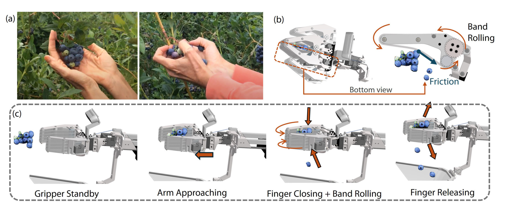
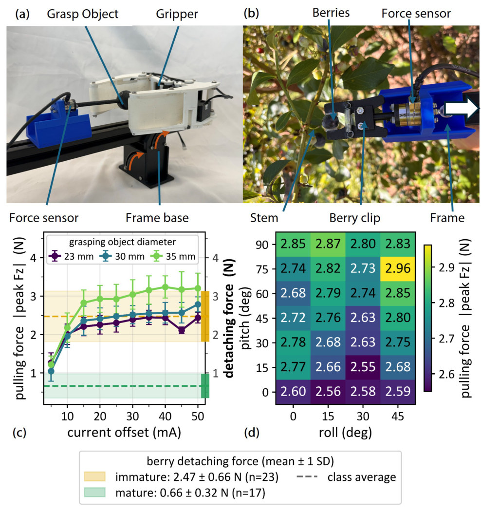

The SARB-Gripper: picking like a human thumb
Human pickers rub several berries at once against the supporting stem with their thumb and catch the fruit in their palm: ripe berries let go under the load, unripe berries stay attached. The SARB-Gripper reproduces this motion with two fingers, each carrying a soft Dragon Skin 20 silicone band driven by its own Dynamixel XC330 servo. The fingers close around a cluster through four-bar linkages, the bands roll, and friction at the fruit–band interface detaches berries at the berry–pedicel junction into a soft net below the gripper.



Sensorless force regulation. Because the finger servos run in current-based position control, motor current rises when a cluster resists closure and serves as a surrogate for contact force. Each finger closes while its window-averaged current sits below an adaptive threshold and backs off slightly when it exceeds it, so the gripper conforms to irregular, off-centre clusters and bounds the load while the bands keep rolling. Harvesting stops when the finger currents return to their unloaded baseline or when the eye-in-hand detector no longer sees mature berries.